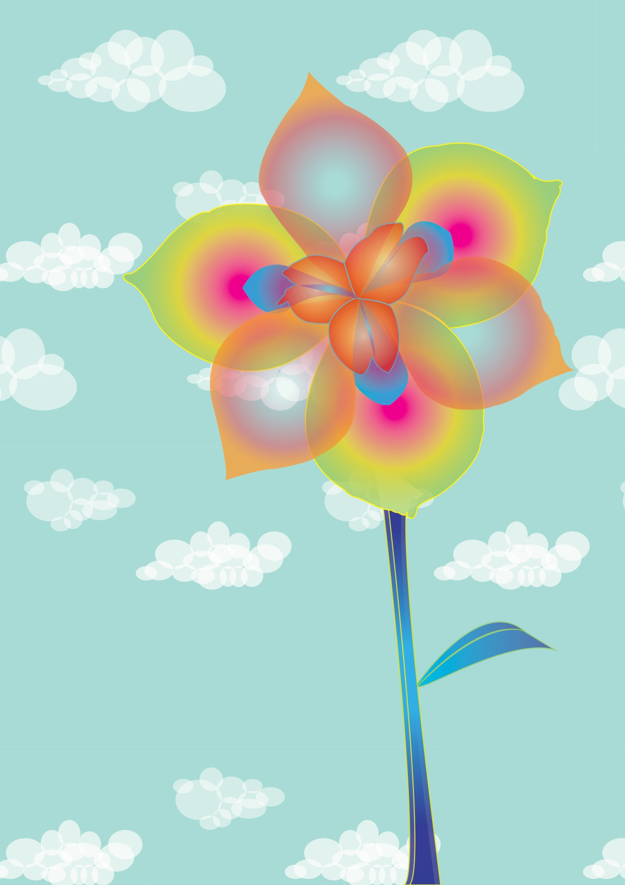

This page showcases various exercises and assignments completed throughout the semester using different multimedia tools.
Illustrator
Using a reference image of a temple, I traced a flower and experimented with transparency effects to create a composition of clouds and layered visuals.

By using the Pen Tool and transparency options, I illustrated a detailed scene from a temple reference, exploring complexity in shapes and layers.
This task required us to combine all the tools and techniques learned so far to create a creative animal collage using vector shapes and textures.
Photoshop
Retouching
We used Photoshop's retouching tools (like Spot Healing Brush, Clone Stamp, and Patch Tool) to correct imperfections in images. Later, we applied the same techniques to a photo of ourselves.
Coloring
Using channels and coloring effects, we selected and applied color to parts of an image according to a template. Then we repeated the process with our own photo to develop customized colored compositions.
Collage
In Exercises 7 and Task 2, we created digital collages using selection tools, masks, and layered effects. This allowed us to combine different visual elements in a cohesive and artistic composition.
Premiere
GIF Creation
In Exercise 8, we created a GIF where only one element moved while the background stayed static. We used Photoshop to isolate the moving element as a PNG, then layered it in Premiere and exported it as an animated GIF.